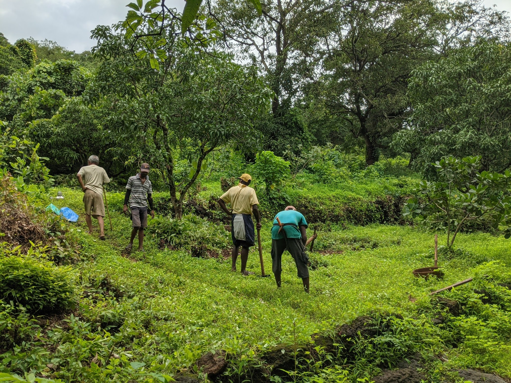

Wir sind eine kleine Familie aus der Küstenregion von Maharashtra. Die Gegend um Ratnagiri ist weltweit bekannt für Alphonso-Mangos, Kokosnüsse, Jackfrüchte und Cashews. Auf unserem etwa 50 Hektar großen Land bauen wir seit Generationen verschiedene Produkte an und nutzen sie.
Sie sind herzlich eingeladen, uns zu besuchen!

Arbeiten in der roten Erde. Der Monsun macht alles schön.